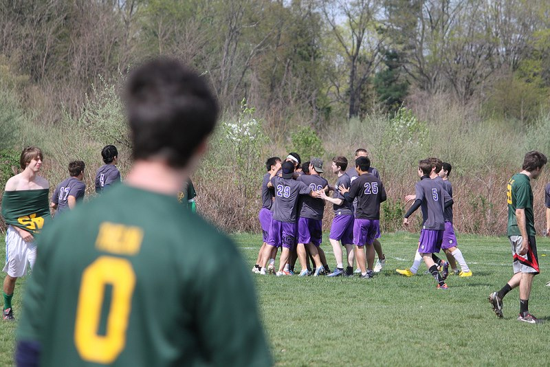
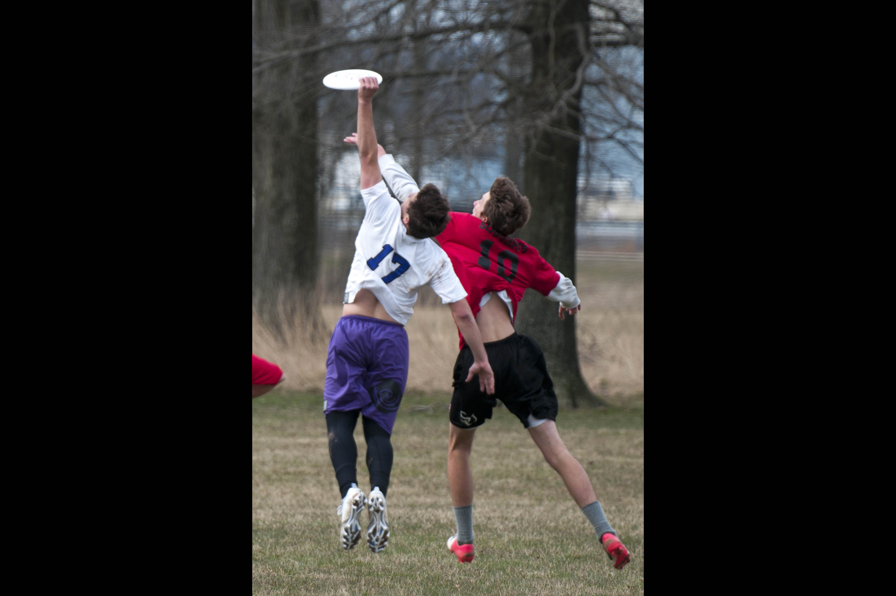
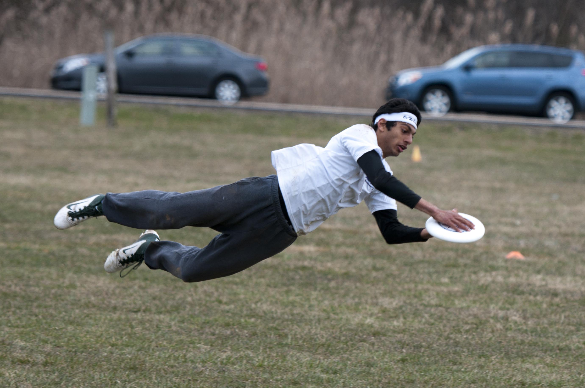
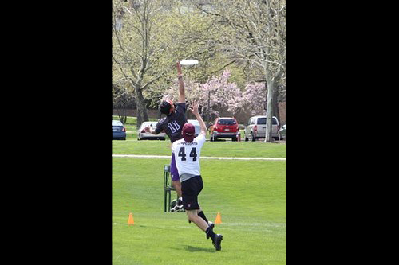
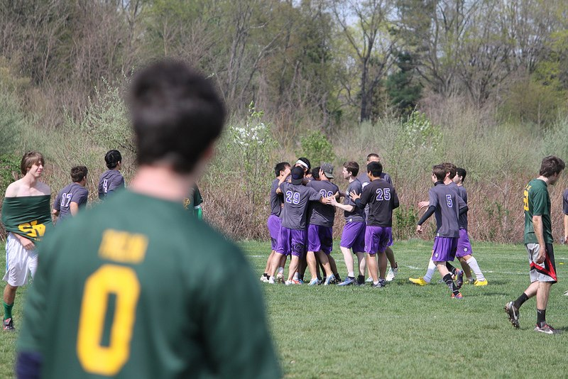
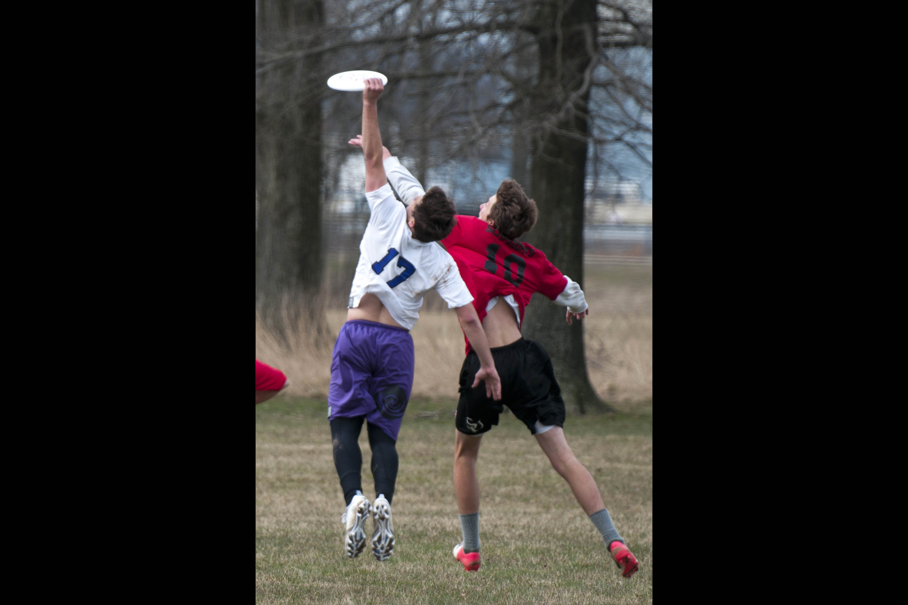
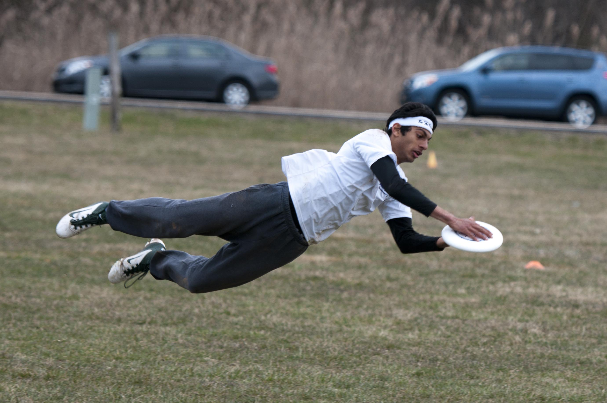
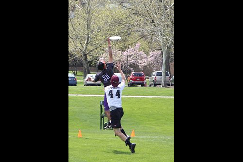

Welcome to Void Ultimate, the University of Pennsylvania Men's Ultimate Frisbee team. We have just finished an exciting season, finishing 7th at regionals, up from 9th the year before. Void is gearing up for another great year, working on conditioning, strength, and disc skills throughout the summer and the school year.
Practices and tryouts will begin in the fall semester and will be announced on our website and on campus. Please check under the Schedule tab for details and field locations.
For freshmen, graduate students, or anyone else interested in joining the team, please contact us at: Void.Ultimate@gmail.com
2013 - 2014 Captains:
Himalaya Mehta (mehta.himalaya@gmail.com)
Tate Tabtieng (tatetabtieng@gmail.com)